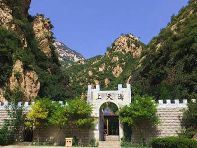

龙门天关景区
 沿小西河逆流而上，龙门天关长城文物保护区就会出现在眼前。此地山峰挺拔，断崖绝壁高耸入云，山谷中清泉溪流激浪奔腾，景色尤为壮观。自古以来，这里是京 都通往塞外的交通要道和兵家必争之地，金、明、清各代都把此地视为军事要塞，重兵把守。所以，景区有许多文物名胜遗留至今，现有的“大龙门城堡”、“蔡树 庵长城”、“摩崖石刻”等都是河北省重点文物保护单位。
上天沟景色似天庭仙境，沟内植物茂密蔽日，九道瀑布飞流直下，天梯瀑落差达40米，气势磅礴，十八潭清泉恰似珍珠镶嵌其中，万亩原始次生林郁郁葱葱，动植物资源异常丰富。步入上天沟，山泉溪水、古树盘石、悬空栈道相继映入眼帘，如入仙境。
大龙门城堡原是明长城“内边”上的重要关隘，被誉为“疆域咽喉”。据《水经注》记载，这里在唐、宋以前叫“圣人城”，曾是中原与塞外的要塞重镇，屡经战 乱。明代将其作为军事重地重新修建，从嘉靖年间开始，由“钦依大龙门守口总指挥使把总官钦”戍守，清代沿袭明制，一直到光绪时才废止。现保存完好的大龙门 城堡、城门，与其外围的军事设施遗址，仍然能使人看到一个完整的古代关隘防御体系，充分体现了我国古代劳动人民卓越的建筑艺术和军事才能。
大龙门城堡西北一华里的龙门峡，两侧山崖峭壁上留有30多处摩崖石刻，都是明、清时驻守关隘的武官留下的真迹。其中以“万仞天关”、“千峰拱立”最为醒 目，字高2.7米。其余题字大小不等，内容可分为两类：一类为描述关山险要雄伟，以振军威，多用于楷书写成，字迹遒劲浑厚，笔力顿挫沉雄，各具风格。另一 类则是描述这里山河秀丽俊美，以激发将士和民众的爱国热情，这一类多用行书、草书写成，运笔潇洒自如，是难得的珍品。题书者有明代万历年间都御史兵部侍郎 贾三进，万历武进士钦依大龙门把总指挥都门何继文，总兵吕志远、王世兴等，这些刻字，为研究古代书法艺术提供了可靠的佐证。经专家考证，这里是华北地区规 模最大的摩崖石刻群，被誉为“历史文化长廊”。 |